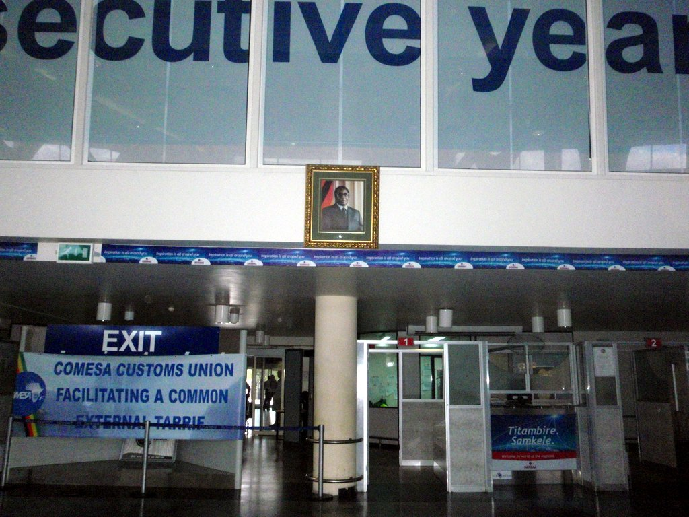
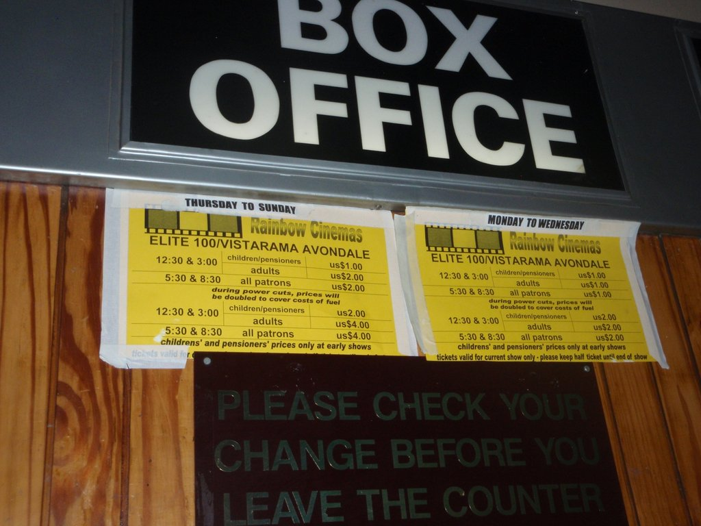
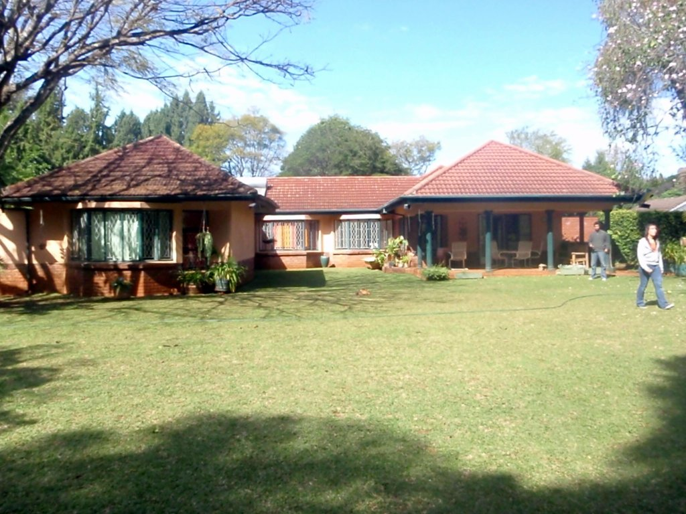
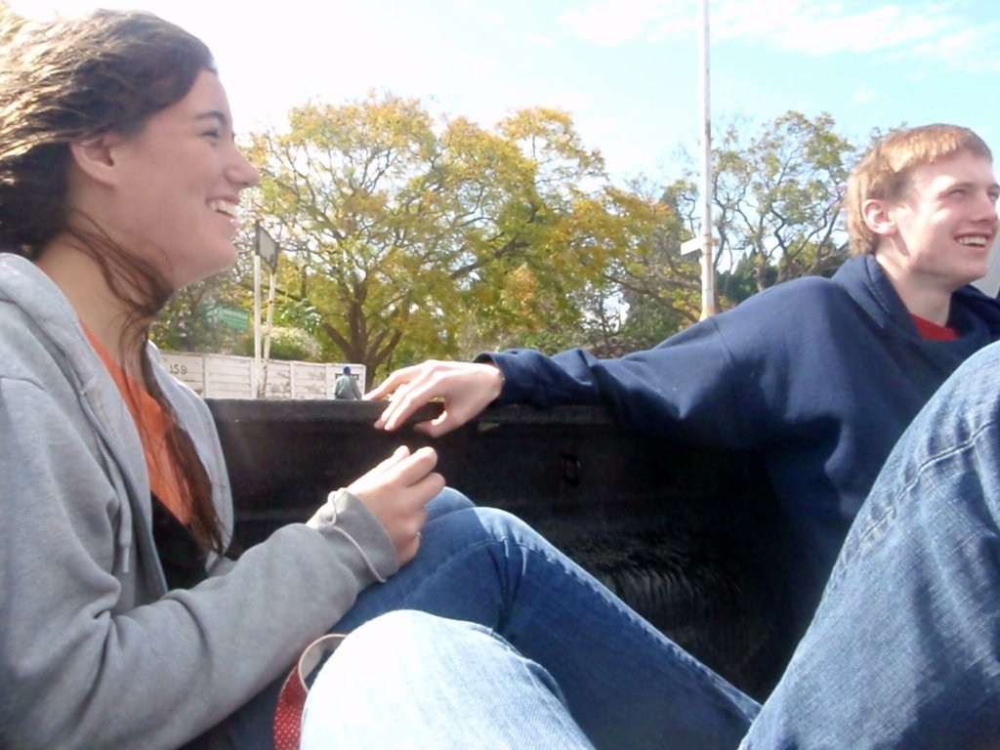
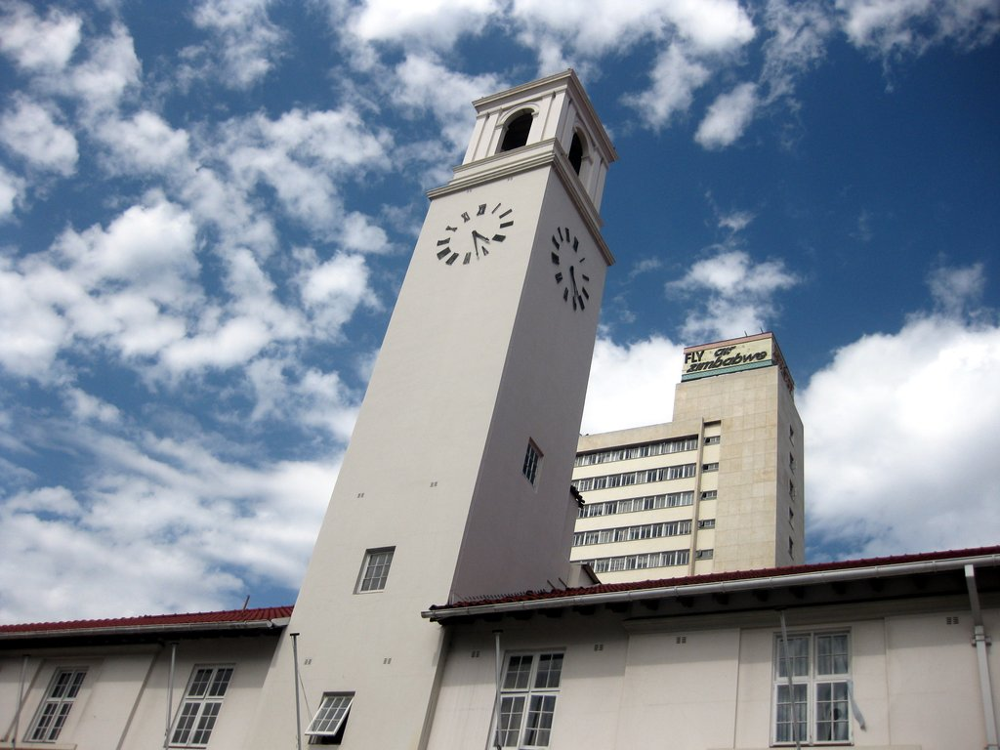

It certainly has been an eventful few weeks. So eventful, I don't even remember when my last update was or what was in it. This will force me to violate one of the great laws of literature—to start telling a story at the beginning—because I have no idea when the beginning is. Accordingly, I will start at the end, and tell backwards.
You may have heard that there was recently an election in South Africa. This is true, and a man named Jacob Zuma won. Now, you may have heard this Zuma guy is a bit of a sketchy character. This is true. He's dodged many corruption charges on technicalities, has been accused of rape, and has many (much younger) wives. His closest ally in politics, Julius Malema, has called the premier of the Western Cape province, Helen Zille "a racist little girl" and claims he will kill for Zuma. Also, Zuma's favorite campaign song, which he leads the crowd in frequently, is Mshiniwam, which translates to "My Machine Gun." To be fair, it is a pretty awesome song.
[Image to be added: A commonly printed picture of Jacob Zuma...]

...when, of course, this picture is also available.
If you want the results feel free to google them—there are lots of good articles that will explain everything. They will also note that South Africa will be just fine, so everyone can calm down.
I know this because just before the election, I was fortunate enough to be randomly selected to go to a performance of MacBeki, a play at the Market Theatre, in downtown Joburg. The basic idea of this play is Thabo Mbeki (previous president of SA) = Macbeth. Before you get all tragic minded, know that the tagline is "MacBeki: a farce to be reckoned with."
It was absolutely brilliant. I've never seen a play as funny, my apologies to those on this list who were in The Suicide. It was just amazing, and best of all, I got nearly all of the jokes. I missed a couple, like how MacBeki said his health minister managed to get great watches second-hand (she used to steal watches from dead people at a previous job in an AIDS clinic), or why Julius wore a carpenter's outfit while the rest of the cast wore suits (he majored in woodworking at school—the joke is that perhaps he'll make the cabinet... if you don't get it, think about different meanings for the word cabinet). All in all, it was just amazing, and it showed me that SA will be alright—if this can be the most popular play in the country, widely advertised and so spectacularly brilliant, there are a lot of people with their heads in the right place.
Academically, things are fine. African Studies is quite enjoyable—I just researched this guy called Mungo Park who was the first white guy to see the River Niger. I also learned about some hapless British explorer who set off to find the Niger, not realizing that the giant river mouth he'd started the expedition at was in fact the mouth of the Niger. Hidden in plain sight, as we say. Otherwise, things are good—the AS exams, which I am blissfully uninvolved in, are this week and people are stressing. I, however, have just discovered a giant stash of books in the library I hadn't noticed before, and am now halfway through The Botany of Desire, which you should google to see how awesome it is. I'm sure my father has read it already, but if not, he should, because it's about gardening, evolution, plants, bees, history, philosophy, weed, culture and tulips all at once. Talk about cool.
You may wonder how I have so much time to read. I'll tell you—my girlfriend dumped me. It's actually kind of remarkable how much my reading drops when I have a girlfriend. But anyway, this is actually old news—many of you already know it. If you're concerned for me, don't be—I'm taking it philosophically. Que sera, sera, as we say in Spain when Gmail won't let us put the accents in where they should be (they should be on the As). That means "what will be, will be." So far, it seems to have been true. (A note to the reader—this was a bald-faced lie. Salima dumping me was devastating, though only for a short period of time.)
Perhaps the most exciting thing that's happened in this interim between my updates is my progress on my community service project. As I may or may not have mentioned before, I, as a gap year student, am responsible for creating and implementing a service project in the local community. After three months of wasting precious time brainstorming and "identifying my passion-areas," I finally got to work creating an organizational system in the Emthonjeni library. Emthonjeni (pronounced Em-ton-jeni) is a community center that runs a health clinic, daycare and afterschool program for residents of the Zandspruit informal settlement, which is approximately 40,000 people packed into an area the size of St. Paul's. The library is for the kids in the afterschool program and in the daycare, and it was more like a low-budget parody of a bookshelf than a library.
(I have no doubt that this community service project, despite featuring prominently on a few applications for things, made absolutely no difference, and probably failed to survive the month. We had no buy-in from anyone at all, and we were intimidated by the community we were intending to serve. Sure we talked big about making something sustainable, but I would be shocked if we actually succeeded.)
For two months, my team and I catalogued the books, creating a digital catalogue of every book, its form, its content, its language and its condition. Afterwards, we designed a system based on color and location. We decided against Dewey Decimal largely because of my long-term, first-hand experience with it at home, where my dear mother decided what we really needed was some way of organizing our books that made them absolutely impossible to find. Really, I'm lucky that I can read at all.
Anyway, we have now put in the system. It's quite easy, easy enough that a four-year-old who can barely speak English was able to find exactly the right kind of book about fire trucks that he wanted with absolutely no assistance. There's still lots of work to do, of course, particularly replacing the picture frame we shattered when we put literally the last book on the shelf.
So that's cool. But actually, I just realized that I lied in the previous section, because it was not the most exciting thing that's happened to me. Really, the most exciting thing that's happened to me was the First Annual ALA Easter Weekend Ping-Pong Tournament. It was epic, even though I lost in the men's final. I gave great nicknames to all the players including myself (Fas Co "Quick Hands" Gris).
Also, I just got back from my first rugby match ever. It was the Gauteng Lions vs. the Australian Waratahs, which is apparently a shrub found in southeastern Australia. Anyway, we arrived to find our seats were in literally the last row of the entire 80,000 person stadium. I could touch the roof. Somewhere far below us I think I could see a field, and possibly those colored dots could be players. Luckily, the stadium was empty, and so Spencer and I moved up to the front row, where we could appreciate just how truly massive your average rugby player is (he's big). The game was satisfyingly violent, but unfortunately the Lions managed to lose in the last five minutes. Oh well.
That seems to be about it. As always, I love responses to my updates, particularly ones with amusing anecdotes in them. So, I hope you all are well, and I can't wait to see you in six weeks.

One surprisingly significant aspect of my ALA experience was the peacocks, which were lovely, but make a hideous call, and leave shit everywhere.
—fas co gris
· · ·
June 23rd, 2009
Penultimate Africa Update
My year in Africa is coming to an end. By last count, I have 20 days left. The school year is ending—in fact, today is the last day of exams, which are the last academic events on my calendar. The African students are not quite so lucky—after exams the school is "prototyping" the year two schedule, which in typical ALA fashion has yet to be designed.
I and the rest of the Americans, however, are not going to any of this year two silliness. We're going to hang out, work on our CSPs, and go on trips. We're planning one big trip to Zimbabwe, which will hopefully be with the dean of students, Mr. Peter, who rocks.
For now, we are taking exams. A couple of days ago, for example, I had Swahili, which was an unmitigated disaster. There were whole sections I couldn't answer. Sections, as in more than one of them. One was this fill in the blank thing where we had to put the correct preposition in some Swahili sentences. I didn't know the prepositions, of course, but what made this unusually difficult is that I couldn't understand what the hell those sentences were going on about either. I'm guessing I didn't do too well in this part.
The other exams went fine, I suppose. I have one more in 15 minutes, which is geography.
There are, luckily, other things going on besides exams, like an interhouse basketball tournament. I continued in my tradition of being the best player on a truly terrible team, scoring four points. This doesn't sound too impressive, but it's actually the sum of our points. We played five shortened games, which averages out to slightly less than one point per game.
Because of our bruised egos, we decided to challenge a bunch of other houses in frisbee. Since frisbee began as a Nile House thing at ALA, I think we might be able to win if we took on the rest of the school, but the other houses foolishly accepted to play individually, which means that we will dismantle them cruelly, one by one, laughing as we do it, sometime next week. I am very excited.
Also, I've been working on my community service project. We painted the shelves in the library (to correspond with the color coding system) a couple of weeks ago. I learned many valuable things including that paint loves to spread itself via the bottom of shoes, and that paint does not come off with water. It's been almost two weeks, and I still have bits of green on my arms, which is actually remarkable improvement from a week ago, when my hands were a disgusting mix of blue, green and red. The kids at the library thought I had skin disease. People at ALA kept asking me if I had used my fingers to paint the shelves. They thought this was very funny.
But now my project is more or less complete—the library is clean, organized, painted and ready to go. Also, there is a dedicated program to make sure it stays that way. So that seems pretty good.

I actually have no memory of what's going on here.
Speaking of accomplishments, I recently participated in an "Iron Man" competition for the grand opening of my friend Spencer's laundry business. As you might have guessed, this Iron Man competition is about ironing. I, unfortunately, am not a very experienced ironer. I'm not a complete newb—I think I may have ironed at least 3-4 things before. Maybe even 5.
Anyway, I was up against a deranged habitual ironer named Michael Khaemba. I have seen this lunatic iron his socks. I am not kidding—he irons every single day. (Note to the reader—Michael Khaemba later joined me at UNC).
But I was not to be deterred. When they put the wrinkled uniform (which was, in fact, my uniform, since it's never been ironed) on the board in front of me, with the bright lights glaring down, I believed in myself. I set into it, ironing the hell out of that shirt.
When my time was half up, I set aside the shirt, noticing how it actually seemed more wrinkly than it had been before. I looked over to Michael. He was already on the pants, and his shirt looked gorgeous. I decided that if I was going to win this, I had to be a little more creative. I couldn't win if I played by Michael's rules, because he was better—I had to change the rules.
So I began to iron a bit unconventionally. I ironed in the air; I ironed against my chest; I ironed inside the pant legs. I sprayed Michael with the steam from the iron. I held the iron above my head, and wrapped the pants around it, waving them furiously, and shouting at the wrinkles. I burned my hand severely grabbing the hot part of the iron three separate times.
Obviously, this did not get rid of any wrinkles. But this was irrelevant—the winner was declared by holding up the competitors' clothing, and judging whom the crowd cheered for. So while Michael was obviously the better ironer, the crowd was on my side. Some were crying with laughter. When they held up my soaking wet and horrendously ironed uniform, the crowd went wild, and I won easily.
Unfortunately, once you exploit a rule, it gets changed, and in the finals of the competition, the applause rule was dropped in favor of an impartial judging system. Obviously, I lost, because I am perhaps the worst ironer in the history of the world.
So that's what's going on with me. I hope that you all are well, and I can't wait to see you when I come back home.

Wherever I go, I end up with friends like this.
—fas co gris
· · ·
July 2009
Final Africa Update
This email has two purposes. First, to describe my last few weeks here at ALA, especially my trip to Zimbabwe. Second, to somehow wrap up an entire year of often contradictory experiences. This email will not be easy to write, and above all, it will not be short. If I were you, I'd split the reading up over a few days, or at least sit down and get something to eat before you start. Just a bit of friendly advice.
So I don't really remember when I sent my last email. A while ago, I suspect. Certainly, many things have happened since then, chief among them a trip to Zimbabwe.

But how could I leave this lovely campus?
I'll begin with the planning, which in typical ALA fashion, was haphazard. A few conversations, a few bus tickets paid for, but not used, and all sorts of confusing complications. The planning stages dragged on for nearly a week with nothing being accomplished, until the night before we left, it suddenly all fell together in a fit of organization. In fact, I didn't know I was leaving South Africa until a little after midnight, approximately 10 hours before my flight left.
I could have known earlier, but I was having my hair cut. Daniel Oreoluwa, from Nigeria, had assured me he was an expert in cutting white people's hair, and since my situation was a bit dire, I took him at his word. His word, as it turns out, was completely false. His first attempt (of 4) cut my bangs in a large curve around my face, eliminating all my hair at the top of my forehead, while leaving huge bushy earmuffs where I should have had neatly trimmed sideburns. It looked like I was peering out from an immense fur-lined hood.
After that, I more or less directed the rest of the haircut. Because he'd cut my bangs so short initially (at least in one small area of my forehead), I knew the haircut was going to be a short one. An hour and a half later, I had a short and somewhat asymmetrical haircut, but at least it looked reasonably sensible. I went back to my room, learned I was leaving for Zimbabwe in the morning, packed, and went to sleep.
We left for O.R. Tambo International the next morning. By the way, "we" is the four Americans: me, Jack (18 yr old Californian), Nina (17 yr old New Yorker), and Simone (18 yr old Jamaican/New Yorker). I slept the whole flight, only waking up upon touchdown at Harare International Airport.
Customs, like the rest of the country, was relaxed. As long as you pay your 35 USD, you're good enough for Zimbabwe. The most interesting part of the airport are the ubiquitous portraits of Mugabe, hanging all over the place.
[Image to be added: Robert Mugabe portrait — Robert Mugabe is still, amazingly, in power.]
Before we go any further, we should discuss a bit of current affairs in Zimbabwe. As I'm sure you all know, Zimbabwe, under Robert Mugabe's disastrous land redistribution policies has slid into unprecedented economic collapse. Last year, inflation increased exponentially, reaching a point when any attempt to calculate it was simply impossible, because first, any economic activity took place without the currency being involved, and second, when you're dealing with 10,000,000% annual inflation, why even bother. Indeed, Zimbabwean money was completely worthless, even when you're talking about suitcases filled with 100 trillion dollar notes. And that's one hundred trillion with eight zeros removed from the end by order of Mugabe, so we're talking about a note worth this many Zimbabwean dollars: 1,000,000,000,000,000,000,000. That's at least 1 gazillion by my count, and if a suitcase of those doesn't buy bread, the currency is worthless.
More recently, Zimbabwe had an election, which Mugabe lost, despite his best efforts to kill or jail anyone who might vote against him. Of course, he didn't give up power, but rather brought his rival from the Movement for Democratic Change (MDC), Morgan Tsvangirai (pronounced Chang-geer-ai) into a power-sharing government with his party, Zanu-PF. Mugabe then proceeded to exploit the crap out of poor Tsvangirai, removing him from almost all significant decisions, and bribing many of his ministers with fancy Range Rovers.
But there is good news coming from this disastrous situation—Zimbabwe's criminally insane central bank governor, Dr. Gono (not a real doctor), has finally abandoned the Zimbabwean dollar entirely, instead allowing people to use a combination of South African rands and US dollars. Inflation, then, has slowed dramatically, probably to around 10%, which in most places, would be terrible, but by comparison ought to be pretty good.
This also means that my US dollars, which have been sitting in a safe in the Dean's house for a year, finally have a use. It also means that people have huge piles of Zim dollars sitting around, which they love to give to tourists like me. It also means that in Zimbabwe, it is relatively common to find Sacagawea coins and two dollar bills being used.
Anyway, after dinner, we went to Harare's one movie theatre to watch a movie. My ticket cost one dollar, although according to a sign outside the theater, if the power had been out it would have cost two, to pay for the generator fuel. After the movie, we drove back to Mr. Peter's house, watched a little cricket, then went to sleep.
The next morning we woke up around 9 to go see the chief correspondent for the AP in Zimbabwe. Nina's mother, who works for Human Rights Watch, knows everyone important everywhere, and so she told this guy that we might drop by for a chat. We went with Boris, and his saxophone-playing friend V.
The drive there was quite nice, because Boris does not have a tiny car. Rather, he has a tiny pickup truck, and we four Americans rode in the back, drawing lots of odd looks, for while the back of a pickup truck is a common mode of transportation in Zimbabwe, it's not very common to see white people doing it. But it was actually great, because we could see all the sights, enjoy the warm, fresh air, and chat comfortably.
The AP guy was very interesting. He talked about his time in Zimbabwean prison, which was not pleasant, and all sorts of other cool things. His name was Angus, too, which is pretty sweet. His house was also next to the American Embassy, which seems to be built to survive through nuclear winter. While walking by, I saw an American lady driving a huge SUV. It sure made me miss home.
After we finished up with the AP guy, we went to V's house for lunch. V had just moved into his house, and so his only furniture is a futon and a mattress. However, he made some amazingly delicious curried chicken. He also somehow made cabbage delicious. It was a very good lunch.
[Image to be added: Commander Fatso? Was that this guy's name?]
Harare is quite built up. Thinking of similar American cities, I couldn't really come up with one, but Harare has about 1.6 million people. There are lots of skyscrapers, the two largest dedicated to the Central Bank and Zanu-PF. Harare is certainly more of a city than Grand Rapids or Portland, but certainly less than say, Boston. What's notable about Harare is the complete anarchy in the roads (lane lines are considered more guidelines, and swerving suddenly to avoid potholes is constant and normal), and the immense crowds of people, everywhere. The place was absolutely teeming, especially at the bus station. I've never seen anything like it.
While we were waiting for Boris to sort out the tickets, this guy came up to the car and started chatting with us. He had an erratic beard, and huge dreads, and he apparently knew V. They talked about upcoming gigs (he was a bassist, and V, if you remember, plays the sax). Then they started talking about Bob Marley, which quickly segued into a discussion of pot. V accused this man of being really high at some recent show, but the guy denied it vigorously. "No, man, I don't smoke to get high."
V looked at him incredulously. "Then why do you smoke?"
While V was trying hard not to laugh, the guy continued. "Do I look high to you right now?"
V said no, although I was close enough to him to note that if he didn't look high, he certainly smelled it.
"Yeah, exactly, man. I've had 20 joints today, and I'm not high—I'm just, you know, in tune."
Grandpa, with his experiences in Amsterdam, might know what this guy is talking about, but the four of us and V struggled to keep in our laughter. Eventually, he went away, swaying lightly, and Boris came back, with new tickets for the next day.
[Image to be added: Do I look high to you right now?]
Soon enough, it was time for V's gig. We piled back into Boris's pickup, and drove off to some club, where V was performing with this band called Comrade Fatso and then some Shona word which I have forgotten. All I remember is that it started with a "u" and translated loosely to "when the shit hits the fan."
Anyway, the entire band, with the exception of V, had dreads. This includes Comrade Fatso himself, who is a rather emaciated looking white guy. They played some pretty sweet music, although to be honest I found Comrade Fatso's rapid-fire poetry a bit off-putting, especially when combined with his violent dancing. The band, however, rocked, even the stoned-out-of-his-mind guitarist. The bassist was especially good, giving bass solos that sounded like music, not like a diesel engine starting on a cold day. V was also awesome at the sax, and the woman who sang the bridges between verses of Fatso's revolutionary poetry had a wonderful voice. The best part is when they brought up these two rappers. One of them rapped in Shona, which I don't understand, but it was good anyway. The other guy rapped in English, and he was just completely amazing, as good as any famous rapper you can mention. It was just so cool.
The next morning, Nina's mother had arranged a meeting with Zimbabwean Lawyers for Human Rights, an NGO who donates legal representation to protestors, opposition politicians, and others whose human rights have been violated by Mugabe. They were cool, and seemed to know literally everything about everything. Jack, as he does, fell asleep in the meeting, but I found it absolutely fascinating.
We grabbed some lunch, then made our way to meet Tinashe's mother. Tinashe is a friend of ours at ALA, and his mother works as a lab technician identifying STDs from samples of different bodily fluids. She's quite a lady, and gave us a ton of Zim currency, which is probably the coolest souvenir that is literally without value.
Afterwards we ate dinner (this time a chicken place—Zimbabwe has few restaurants that aren't Chinese or fast food), and dropped Nina and Simone off at the bus station. As usual, it was absolutely packed with people, who moved around like schools of fish amongst a school of whale-like buses, who all seemed to be going in a hundred different directions. It was a scene of complete chaos, but eventually Nina and Simone got on their bus, and Boris took Jack and I back to Mr. Peter's house.
Once there, we began to work out with Mr. Peter our plans to fly to Victoria Falls. Since Mr. Peter was still in South Africa, this was done through my internationally roaming phone. I'm not excited to see the bill. Anyway, we were texting back and forth, until about 8pm, when Mr. Peter agreed that he would book us on a flight and send us the info.
We watched cricket for a while, then eventually, went to sleep. The next morning, having heard nothing from Mr. Peter, I called him. "What's the plan?" I said.
This was not the answer I was expecting. "In your house," I said. "Where should I be?"
"In Victoria Falls. Your flight left two hours ago. Didn't you get my messages?"
I hadn't, and as I later learned, I never would, because Econet, Zimbabwe's wireless carrier, had gone out for four hours the night before. These four hours happened to begin immediately after Mr. Peter told us he would send us the info, and ended just after Mr. Peter did send us the info. Accordingly, we never got the information, and we missed our flight. Of course, there were no other flights, and so we were stranded. "Welcome to Zimbabwe," Mr. Peter said.
We went out, got some groceries, including a delicious rotisserie chicken, and then spent the rest of the day eating and watching cricket with Raj. Raj is an incredibly nice guy, and thoroughly explained every single aspect of cricket to Jack and I through the course of the day. I am now proud to say that I understand cricket more or less completely. I'm assuming this will come in handy at least once in my life.
The next morning, just after I had finished my breakfast of grapes, peanut butter banana and honey toast, and a bowl of cereal, Mr. Peter's brother showed up. He is a huge guy, speaks in stentorian tones, and runs an arts school. He picked Jack and I up, and took us to the National Gallery. Unfortunately, the gallery was closed, so I texted Mr. Peter's brother, and sat down with Jack in the gallery cafe.
We were there for the next six hours. Every half hour or so, I would call someone new, attempting to get us picked up, but without any luck. The cafe, thank god, was open throughout this period, and during our six hours, Jack and I had eight scones, two chicken sandwiches and nine cokes between us. We also read, in total, two issues of Zimbabwean Travel magazine (ironically, almost completely about Victoria Falls), six issues of South African Golf Magazine (where, oddly, we saw a feature on this crazy South African golf hole that Grandpa emailed to me at almost the exact same time I was reading it), and two issues of South African Home and Garden. I now know more about South African golf than anything else, with the possible exception of cricket.
Eventually, we were picked up by Mr. Peter's brother's driver, whose name was Norman. Our tire exploded halfway to Mr. Peter's brother's house, but he quickly fixed it and we were on our way.
It was only a few hours until our bus at that point. We spent them playing Need for Speed on PS3 and eating dinner in Mr. Peter's brother's amazing house. Our dinner was delicious—a masterpiece of scrounge. Jack and I each made two sandwiches, and then traded. My sandwich was toasted bread with avocado, sliced hotdogs, sweet chili sauce and hard feta cheese. Jack's was toasted bread with tuna, mayo, grilled onions and more of the feta cheese. Both were totally delicious.
Eventually Boris came to take us to our bus. The bus station was surprisingly empty, except for a few guys drinking cough syrup outside. We boarded, beginning an 18 hour journey of hell.
The bus was very nice, as buses go. The roads, however, were not. Since the trip from Harare to the border is almost completely downhill, the first four hours felt kind of like the bus was tumbling end over end down a mountain. The worst, or at least most exciting part, was when I used the bathroom in the back of the bus. Thank god I had the foresight to bring my iPod, with the backlight timer set to "always," because way in the back of the bus the bouncing was unbelievable, and the light was out. It was like trying to use a porta-potty on the deck of a small fishing ship in a North Sea gale in the middle of the night.
I had just fallen asleep when we reached the border. At 3am. I am not kidding. We had to get out, walk all over the place, get back in the bus, drive to the actual border, get out, walk across, get back in, walk all over the place on the South African side, then get searched, then walk a little bit more, then finally get back in the bus. This took more than an hour. And it was at 3am.
After another nine hours, we were finally back on campus. I slept for a long time, then rejoined life on campus. Not much had been going on in our absence. Lots of work, apparently. I offered my condolences to my fellow students, but no one seemed particularly interested in receiving them.
More interestingly, some rich people arranged for the entire school to get tickets to a Confederations Cup match between Italy and Egypt. It was awesome—Egypt (who we were all cheering for) won 1-0. I learned lots of Arabic, like houjoum (offense), defarr (defense), sedeed (shoot), yella (go), yemin (right), yesar (left), and salaam alaykoum (a greeting meaning peace be to you). As usual, our seats were in the nosebleed section, and if you looked far down towards the field you might see some tiny men who could be playing soccer.
Even more interestingly, we recently held a surprise birthday party for the other American guy, Jack. First, me and two other guys kidnapped him, which involved subduing him violently, blindfolding him, changing his clothes to pirate clothes we had bought for the purpose (it was a pirate themed party), then tying him up, carrying him on our shoulders across campus, and then leaving him in a dark room for 25 minutes while we changed into our pirate outfits (I had a hook hand made from a clothes hanger), and his girlfriend set up the party room. It was, obviously, a fantastic party. There were pirate shanties to sing, lots of sword fights, and delicious food. And, I learned that kidnapping is surprisingly fun.
Coming up, there is an end-of-year dance, and the night after that a "graduation" dinner. I'm sure there will be lots of amusing hijinks, but unfortunately, I won't be able to write about that because they're going to take away our computers beforehand. If you really want to know about it, you can call me.
· · ·
So. Now for the second part. 10 months at ALA in one, possibly two, paragraphs (this email is already way too long). Really, I'm even doubting how necessary it is—you guys know everything that's happened, except for the boring parts, which I skipped. But that's ok. You didn't want to hear about those parts anyway.
They say a year abroad is "life-changing." I'm not so sure how true that is. Certainly, I've learned a lot—from simple information I wouldn't know otherwise to understanding Islam better to understanding South African politics to being able to differentiate between different languages and even different accents within Africa.
Certainly I've made friends—some, like Mainza or Lennon or Jack or Simone or Spencer or Mehdi or OY or Cynthia or Noni that I will have for a long time. Others, like certain ex-girlfriends, that I won't miss so much. It's also true that I've become accustomed to a lot less personal space, and that I've created a wealth of experience that for the rest of my life I will draw on.
But none of this is "life-changing." My basic values remain the same. As far as I can tell, my personality is more or less the same. They're wonderful, great things, and just knowing that I have a friend in most African countries will certainly connect me more to the continent, but it's not some vital, deep connection. The only places I have that are York Harbor, Maine and Grand Rapids, Michigan, and as sedentary and placid as those places are, they're still home.
This is why it's hard to see how Africa has changed my life. It's added knowledge, experience, confidence, a love for chutney-flavored chips and a hell of a lot of other important things, but I'm still the same person I was before. Which is great—I liked who I was before.
So don't expect me to start wearing African robes or playing drums, or going to live in DRC, even though I do actually want this sweet hat from Côte d'Ivoire. I'm not averse to that sort of thing, but for now, I'm happy to have gone to Africa, and happy to be coming home.